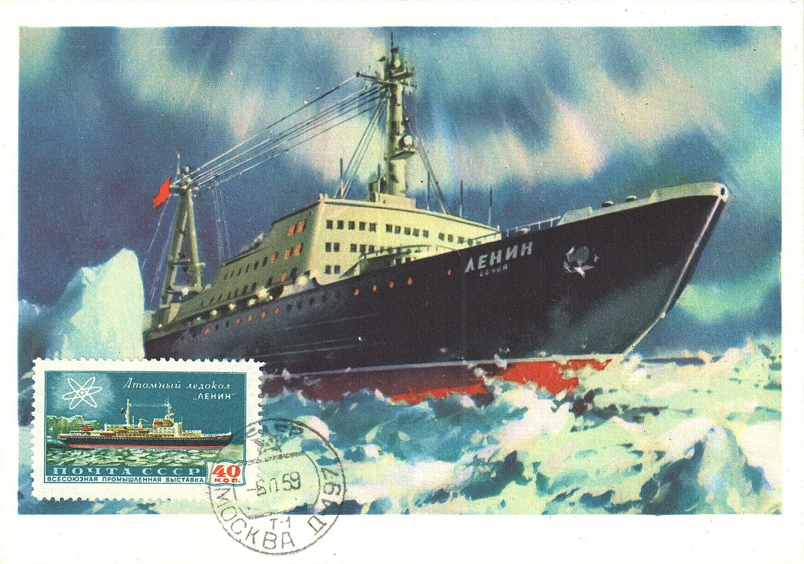
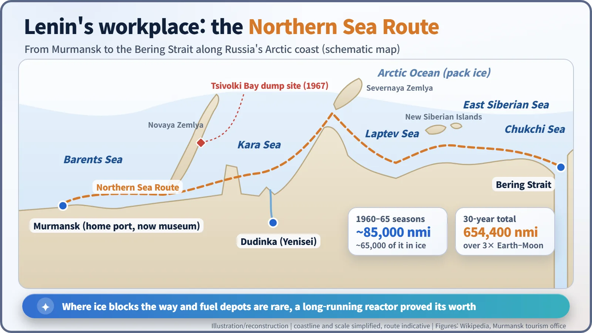
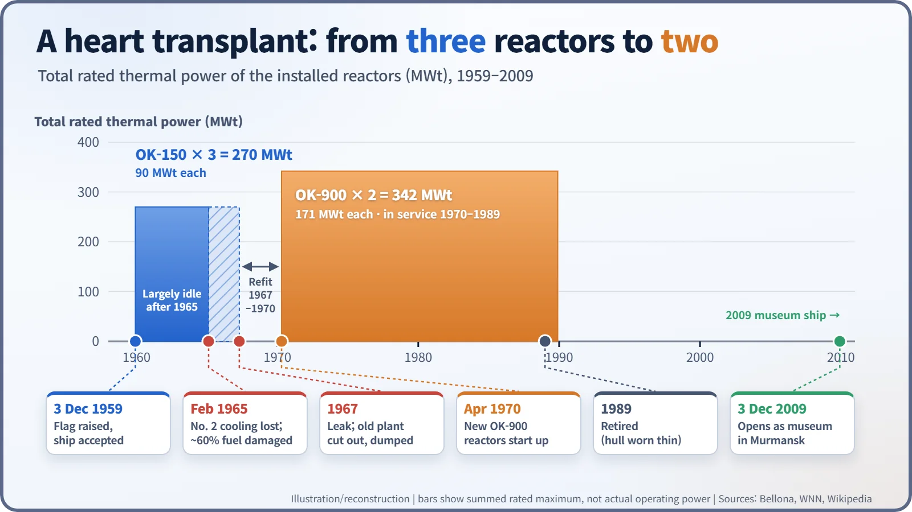
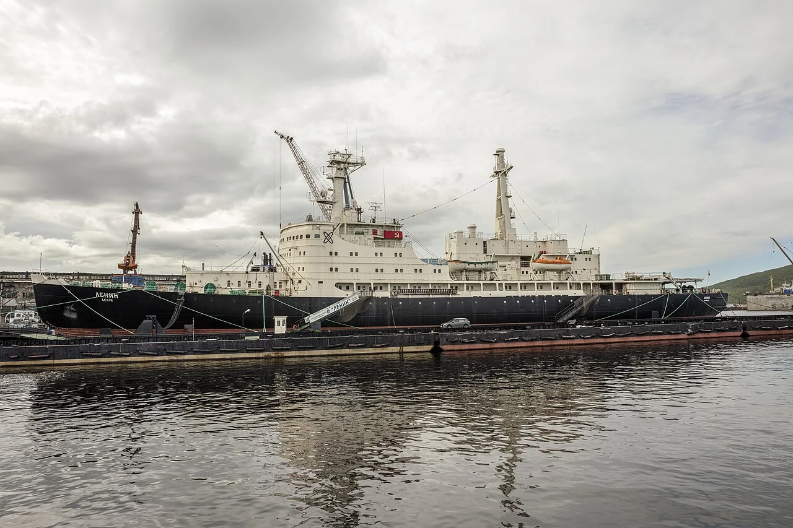

Nuclear History · 162
Breaking Ice with a Peaceful Reactor — Lenin, the World's First Nuclear Icebreaker (1959)
On the frozen Northern Sea Route, a reactor that needed no refuelling for months turned out to be the ideal engine.
Commissioned on 3 December 1959, the Soviet icebreaker Lenin was the world's first nuclear-powered surface ship and the first civilian vessel with a reactor. Three OK-150 reactors let her push through Arctic ice for months without refuelling; after a 1965 fuel-damage accident her original plant was cut out and dumped in the Kara Sea, two new reactors were fitted, and she served until 1989. Today she is a museum ship in Murmansk.
A postcard with an atom on the stamp
Picture a postcard franked in Moscow in the autumn of 1959. On the front, a big black-hulled ship with a red waterline shoulders its way through broken ice. In the corner sits a 40-kopeck stamp, and the symbol printed on the stamp is not an anchor or a star but an atom. The ship's name was Lenin. It was the first vessel in the world that was not a warship to carry a nuclear reactor.

A sea lane blocked by ice, an icebreaker limited by fuel
Along the Soviet Union's Arctic coast runs the Northern Sea Route: from the Barents Sea through the Kara, Laptev and East Siberian Seas to the Bering Strait. It was a lifeline for Siberia, but ice kept the shipping season short.
Icebreakers could stretch that season, yet a coal- or diesel-fired icebreaker has to turn back when its bunkers run low, and fuel depots in the high Arctic were few and far between. A reactor needs no frequent refuelling. By late-1960s figures, Lenin burned only 2.5–3 kg of uranium-235 per 100 days at full power. For a remote, frozen sea, that is close to the perfect engine. [6]
On 20 November 1953 the USSR Council of Ministers adopted a resolution to develop an atomic icebreaker for Arctic service.
Born in Leningrad
The keel was laid on 17 July 1956 at the Admiralty Shipyard in Leningrad (some sources give 27 July), and the hull was launched on 5 December 1957. Vasily Neganov led the ship's design, Igor Afrikantov (1916–1969) led the reactor design, and Anatoly Alexandrov (1903–1994) was scientific director.
After sea trials in the Gulf of Finland from September 1959, the acceptance papers were signed and the Soviet flag was raised on 3 December 1959, a date still celebrated as the birthday of Russia's nuclear icebreaker fleet (some sources give 5 December for entry into service). Her first captain was Pavel Ponomarev. [4]
Three reactors driving giant electric motors
Lenin displaced about 16,000 tonnes and was 134 m long. Her heart was three OK-150 pressurised water reactors, each with a maximum thermal output of 90 MW. In a pressurised water reactor, water is kept under such high pressure that it cannot boil; it carries the reactor's heat to a separate loop where other water turns to steam. The steam spun turbine generators, and their electricity drove motors that turned three propeller shafts, delivering 44,000 horsepower. [1]
The ice-breaking itself is surprisingly low-tech: a rounded bow rides up onto the ice and the ship's weight crushes it. What you need is the stamina to keep pushing, hour after hour, and that is exactly what nuclear power offers. In the Arctic seasons of 1960–65 Lenin sailed about 85,000 nautical miles, roughly 65,000 of them through ice. [6]

February 1965: reactor No. 2 goes wrong
It was not all plain sailing. In February 1965, while reactor No. 2 was undergoing repairs and refuelling, an operator error left the core without cooling water for a time. The Norwegian environmental group Bellona records that "about 60% of the assemblies were damaged." Another account says 124 fuel assemblies, about 60% of the total, were stuck in the core, and one source dates the discovery of the damage to 1966. Claims that dozens of people died in the accident circulate, but they have never been confirmed. [1] [2]
In 1967, shortly after fresh fuel was loaded, a pipe leak appeared, and the decision was made to remove the entire OK-150 plant. According to Bellona, about 3,500 tonnes of equipment, including steam generators and pumps, were separated from the hull and sunk at a depth of 40–50 m in Tsivolki Bay on Novaya Zemlya, and a special container holding damaged fuel was later dumped in the same bay. Sources describe exactly what was dumped, and in what form, in somewhat different terms. These objects later became part of the international investigations of radioactive waste in the Kara Sea. [1] [5]
A new heart and thirty years at sea
At the Zvezdochka yard in Severodvinsk, Lenin received two new OK-900 reactors of 171 MW each. The first started up on 22 April 1970; for the second, Bellona gives 23 April and the Barents Observer 1 May 1970. [3]

In 1989, her hull worn thin by decades of ice friction, Lenin was retired. In thirty years she had covered 654,400 nautical miles, more than three times the distance from the Earth to the Moon. In 2009 she was permanently moored in Murmansk, and on 3 December 2009, fifty years to the day after her flag was raised, she opened as a museum. [4]

Where nuclear propulsion lasted longest
Most nuclear-powered merchant ships never cleared the hurdle of economics, but nuclear icebreakers found successors. In 1977 Arktika became the first surface ship to reach the North Pole, and Russia still operates a nuclear icebreaker fleet today. Outside the world's navies, the place where nuclear propulsion has lasted longest turned out to be the frozen sea.